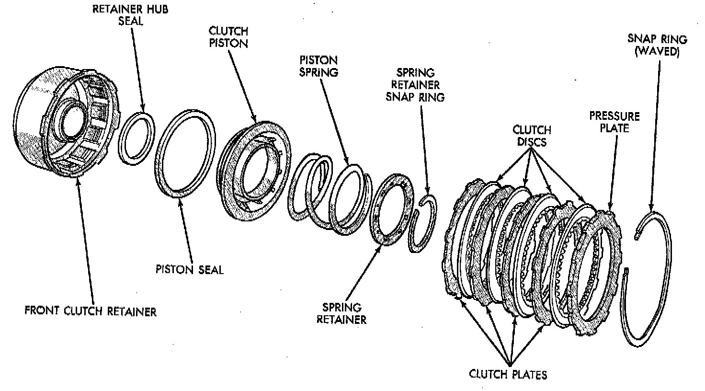
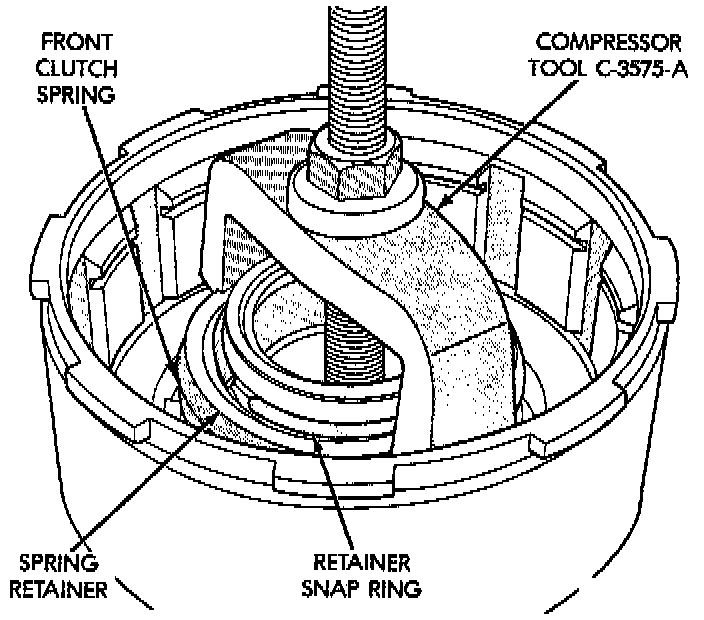
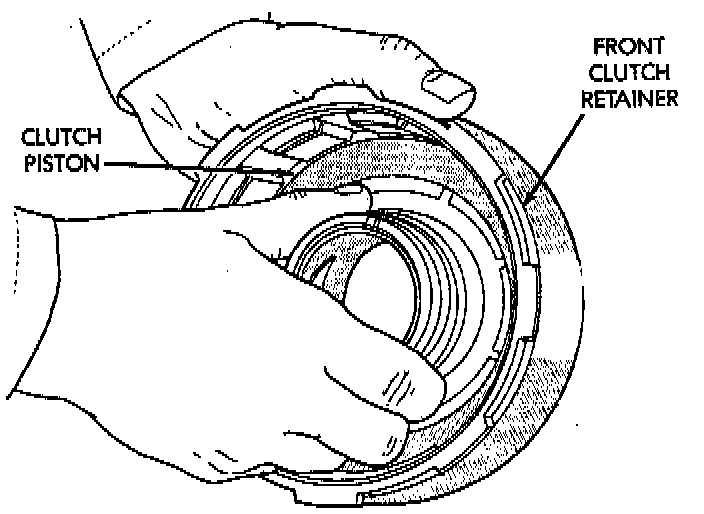
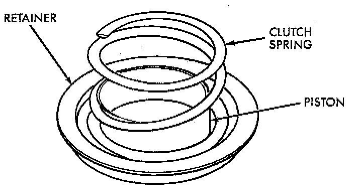
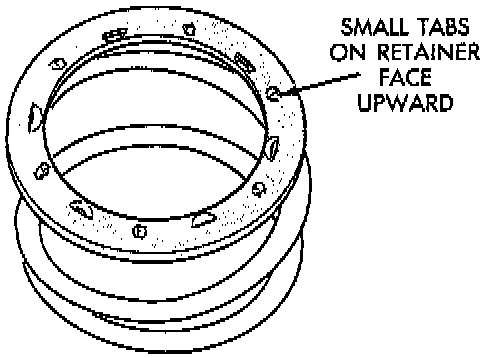

Front Clutch
NOTE: The 42RE transmission uses four plates and discs for the front clutch. The front clutch retainer is not interchangeable between the 42RE and 44RE transmissions.
DISASSEMBLY
1. Remove waved snap ring and remove pressure plate, clutch plates and clutch discs.

2. Compress clutch piston spring with Compressor Tool C-3575-A, or equivalent. Be sure legs of tool are seated squarely on spring retainer before compressing spring.
3. Remove retainer snap ring and remove compressor tool.
4. Remove spring retainer and clutch spring. Note position of retainer on spring for assembly reference.
5. Remove clutch piston from clutch retainer. Remove piston by rotating it up and out of retainer.
6. Remove seals from clutch piston and clutch retainer hub. Discard both seals as they are not reusable.
ASSEMBLY
1. Soak clutch discs in transmission fluid while assembling other clutch parts.
2. Install new seals on piston and in hub of retainer. Be sure lip of each seal faces interior of clutch retainer.
3. Lubricate lips of piston and retainer seals with liberal quantity of MOPAR Door Ease. Then lubricate retainer hub, bore and piston with light coat of transmission fluid.

4. Install clutch piston in retainer. Use twisting motion to seat piston in bottom of retainer.
CAUTION: Never push the clutch piston straight in. This will fold the seals over causing leakage and clutch slip.

5. Position spring in clutch piston.

6. Position spring retainer on top of piston spring. Make sure retainer is properly installed. Small raised tabs should be facing upward. Semicircular lugs on underside of retainer are for positioning retainer in spring.
7. Compress piston spring and retainer with Compressor Tool C-3575-A, or equivalent. Then install new snap ring to secure spring retainer and spring.
8. Install clutch plates and discs. Install steel plate then disc until all plates and discs are installed. The front clutch uses 4 clutch discs and plates.
9. Install pressure plate and waved snap ring. Front clutch clearance should be 1.70 to 3.40 mm (0.067 to 0.134 inch). If clearance is incorrect, clutch discs, plates, pressure plates and snap ring may have to be changed.